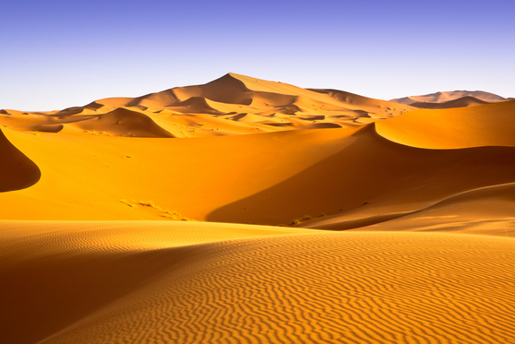

Desertul Sahara
 Sari la conținutProfu de geogra
Meniu Despre Bac Geografie Joc Pregatire BAC Geografie bac jocuri Bac geografie lectii Bac geografie variante rezolvate Geografie Bac rezolvari subiecte Exercitii bac geografie Bac geografie video geografie Bac Harti Harti interactive Africa tari Judetele Romaniei harta interactiva Harti Europa Harti tari Harti metrou orase Harti orase Harti pentru BAC Europa Harti rutiere 100 teste cu raspunsuri Harti Romania Harti judete Harti orase Romania Harti retele de transport Harti unitati de relief Harti fizice si demografice Harti montane Harti oarbe Resurse didactice Fise de evaluare Clasa a V-a Clasa a VI-a Clasa a VII-a Clasa a VIII-a Clasa a IX-a Clasa a X-a Clasa a XI-a Clasa a XII-a Teste de evaluare Teste clasa a V-a Teste clasa a VI-a Teste clasa a VII-a Teste clasa a VIII-a Teste clasa a IX-a Teste clasa a X-a Teste clasa a XI-a Teste clasa a XII-a Materiale didactice Jocuri Jocuri de identificare Romania Clima Romaniei Raurile Romaniei Lacurile Romaniei Unitati de relief Romania Joc Geografie fizica Romania Judetele Romaniei Orasele din Romania Arii protejate Carpatii Occidentali Carpatii Meridionali Carpatii Orientali Europa Clima Europa Raurile Europei Tari Europa Capitalele Europei Relieful Europei Jocuri continente Continentele lumii Joc marile Lumii Joc geografie Africa tari Joc geografie Raurile Lumii Joc deserturile lumii Vulcanii Terrei Forme de relief Forme de relief abraziune Joc relieful magmatic Joc Vulcanism Relief Vulcanic Formele reliefului carstic Formele reliefului desertic Planetele Sistemului Solar Joc – Ce sa iti aduca Mos Craciun? Pregatire BAC- Europa si Romania Animal Memo Joc Geo Snake Test de geografie Diverse Superlative Animale Fenomene Natura Teritorii Geografie in imagini Romania in imagini Spectacolul naturii Termeni geografici in imagini Calendare Orare Felicitari Calendare Felicitari Orare Muntii Romaniei de la A la Z Stiati ca Video Download carti Amuzante Sa vorbim despre Arhiva Experimente si demonstratii geografice Publicat pe 26 noiembrie 2012 de profesorulDesertul Sahara
Desertul Sahara
“ Desertul Sahara nu a fost dintotdeauna o întindere infinită de nisip, ci un ţinut înfloritor,cu vegetaţie abundentă. În ciuda previziunilor sumbre
referitoarela extinderea lui, ca urmare a fenomenului de încălzire a planetei,
există savanţi care susţin că acest ocean de nisip se va transforma într-un Eden..”
desertul sahara
Denumirea sa provine din cuvântul arab sahara care înseamnă deşert de nisip sau din cuvintele sahraa sau es-sah-ra care desemnează sensul de sterp, steril.
Altii considera ca ar proveni din latinul desertus care inseamna nelocuit, abandonat sau din egipteanul deşret adică cel roşu, sterp, lipsit de viata .
Desertul Sahara prezinta urmatoarea morfologie:
Sahara Occidentală cuprinsă între Masivul Hoggar şi Oceanul Atlantic:
Zona are o înclinare uşoară spre vest, relieful fiind usor ondulat cu altitudini ce depasesc ocal 500 de m. Printre formele de relief ce trebuiesc enumerate aici putem enumera ergurile:Iguidi.Ouran,Chech
Sahara Centrală: se remarcă prin prezenţa masivelor muntoase şi a podişurilor înalte (M. Tibesti 3415 m, M. Hoggar, M. Air, M. Adrar D Iforhas;
Apar aici podisuri de tip tassili sub forma unor cueste modelate
Sahara Orientală este un podiş înclinat uşor spre Marea Mediterană, având altitudini de 500-1000 m.Este un ţinut al munţilor şi depresiunilorlargi şi adânci;
Relieful din desertul Sahara este alcatuit din:
Platouri,munti insulari,cueste,martori de eroziune,sesuri aluvionare,erguri,reguri,hamade,ueduri.
Apele de suprafata din desertul Sahara lipsesc cu desavarsire cu exceptia Nilulului, in schimb apele subterane sunt destul de abundente in special in nordul desertului
Desertul Sahara are o clima caracterizata prin ariditate excesiva. Iata mai jos cateva date care va vor ajuta sa va imaginati clima din acest desert:
Temperatura maximă: 58 grade la El Azizia şi 56 gr. La Salah.
Minima absolută: -4 gr. La Salah şi -18 gr în M. Tibesti.
Temperatura medie a verii peste 35 grade
Vegetatia din desertul Sahara este xerofila .
Popoarele din desertul Sahara sunt: tuaregii, berberii, beduinii, maurii şi arabii;
sahara desert
Lasă un răspuns Anulează răspunsul
Acest sit folosește Akismet pentru a reduce spamul. Află cum sunt procesate datele comentariilor tale .
Navigare în articole
Articolul anterior Anterior Muntii Anzi Articolul următor Următor PamantulSuplimente culturism online
Propulsat cu mândrie de WordPress Social media & sharing icons powered by UltimatelySocial